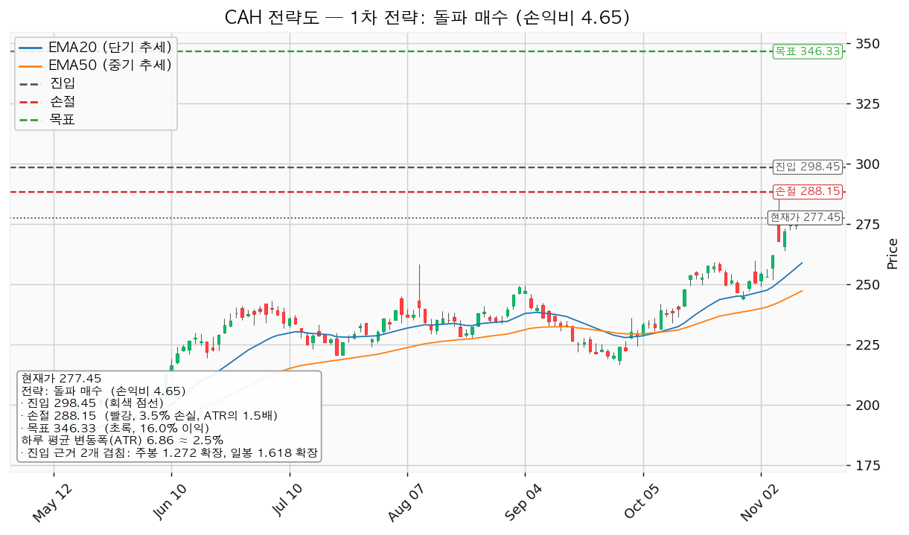
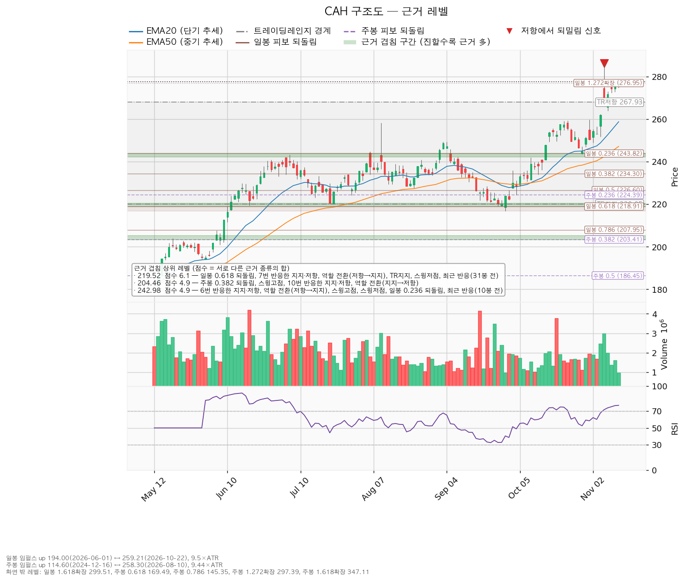
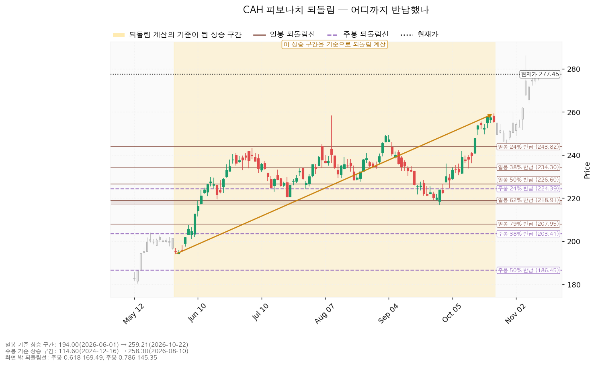
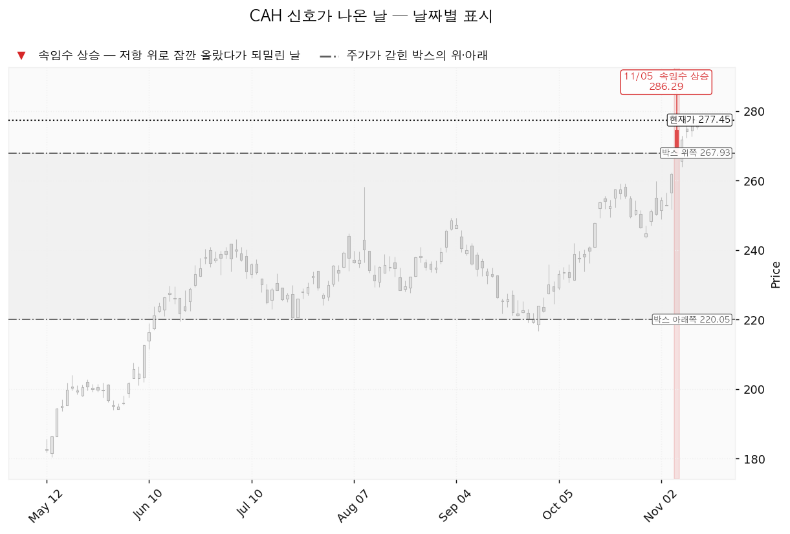

카디널 헬스(CAH)는 미국 병원·약국에 의약품과 의료용품을 공급하는 의약품 도매 유통 기업입니다.
| 구분 | 가격 | 판정 방식 | 현재 상태 | 현재가 대비 |
|---|---|---|---|---|
| 회복선 (돌파 매수) | 298달러 | 일봉 종가 상회 시 매수 | 대기 | +7.57% (3.06 ATR) |
| 집행 손절 | 288달러 | 닿으면 전량 매도 — 진입한 경우에만 유효, 미진입이면 의미 없음 | 미진입 | +3.86% |
| 관망 종료 기준 | 259달러 종가 이탈 또는 2027-02-04 실적 | 미체결인 채 어느 쪽이든 먼저 오면 매수 계획 종료 | 유지 중 | -6.74% (2.72 ATR) |
| 확인선 | 259달러 | 일봉 종가 돌파 후 되돌림 지지 확인 | 돌파 완료, 되돌림 지지는 미확인 | -6.74% |
| 폐기선 (구조) | 220달러 | 이탈 후 3거래일 내 회복 실패(또는 그 전 213달러 아래 종가) + 반등에서 저항 확인 | 유지 중 — 8.36 ATR 떨어져 실무상 작동하지 않음 | -20.69% |
| 항목 | 돌파 매수 |
|---|---|
| 엣지 | 모멘텀 — 저항을 돌파하면 그 방향이 이어진다는 전제. 자주 틀리고 소수가 크게 맞는 유형 (일반적 성격이며 이 엔진에서 측정한 값이 아님) |
| 구조 증명도 | 돌파 확인형 — 진입가는 불리하나 구조가 먼저 증명됨 |
| 진입 | 298달러 일봉 종가 상회 — 근거 2개 겹침: 주봉 127.2% 확장 · 일봉 161.8% 확장, 구간 297~300달러 |
| 집행 손절 | 288달러 (-3.45%) — 진입 아래 가까운 겹침 구간이 없어 진입 기준선에서 ATR 1.5배 아래 |
| 목표 | 346달러 (+16.04%, 6.98 ATR) — 겹치는 근거 없는 단일 레벨(가장 가까운 계산선은 주봉 161.8% 확장 347달러), 분할 없이 단일 목표 전량 매도 |
| 손익비 | 1:4.65 (손절 1.5 ATR). 집행 손절이 곧 ATR 1.5배 구조적 손절이므로 구조 기준 손익비도 같음 |

엔진 선정 이유는 손익비 4.65 × 돌파 확인형 × 진입 근거 2개 겹침이며, 지수 대비 20일 초과수익 +13.28%와 돌파 구간 거래량 최대 1.62배로 순위에 1.15배가 곱해졌습니다(이 배수가 대표를 바꾸지는 않았습니다). 눌림 매수 후보(손익비 1:2.98)는 구조가 증명되기 전에 사는 선취형이라 대표에서 밀렸습니다. 진입 근거 둘은 모두 계산선이고 297~300달러에는 실제로 가격이 반응한 이력이 없습니다. 11/05 고점 286.29달러와 라운드피겨 285달러가 손절 288달러 바로 아래에 있어, 돌파 뒤 그 고점까지 되돌림 시험이 오면 손절에 먼저 닿습니다. 모멘텀 전제에 고정 목표를 붙인 계획이지만 집행 정책상 346달러에서 전량 매도하고, 그 위 구간은 새 셋업으로 다시 잡습니다.
1. 관찰 — 일봉 종가가 298달러 아래로 마감: 아직 무효가 아니며 되돌아오면 속임수 하락일 수 있습니다. 신규 진입만 멈춥니다. 2. 경고 — 이탈 후 3거래일 안에 298달러를 종가로 회복하지 못함, 또는 그 전에 일봉 종가가 292달러 아래로 마감(하루 평균 변동폭 1배만큼 더 밀림) — 둘 중 먼저 오는 쪽. 추가 매수 없이 288달러 손절을 유지합니다. 3. 무효 — 반등이 298달러에서 막히고 그 아래로 되밀림: 셋업 폐기, 새 구조가 생길 때까지 관망합니다.
집행 손절 288달러는 이 판정과 무관하게 작동하며, 292달러 종가 경고 직후라 3단계 판정보다 손절 체결이 먼저 올 가능성이 큽니다. 폐기선 220달러는 8.36 ATR 떨어져 있어, 논지 무효화는 2027-02-04 실적 후 올해 EPS 추정 평균(12.99달러)이 현재 최저 추정 12.93달러 아래로 내려가는 경우로 둡니다.
| 가격대 | 겹친 근거 |
|---|---|
| 297~300달러 | 주봉 127.2% 확장 · 일봉 161.8% 확장 (진입) |
| 285~286달러 | 라운드피겨 285 · 최근 반응(4봉 전), 11/05 고점 286.29 |
| 258~259달러 | 스윙고점(8/11 258.30 · 10/22 259.21) · 20일 지수이동평균(EMA20) · 최근 반응(14봉 전) (확인선) |
| 247~249달러 | EMA50 · 스윙고점(9/04 249.29) |
| 242~244달러 | 6번 반응한 가격 · 저항→지지 전환 · 스윙고점·저점 · 일봉 23.6% 되돌림 (회복선 243, 회복 완료) |
| 219~220달러 | 일봉 61.8% 되돌림 · 7번 반응한 가격 · 저항→지지 전환 · 박스 하단 · 스윙저점 (폐기선) |
박스는 조회한 일봉 752개 중 최근 90봉(220~268달러)이 가장 잘 지켜진 창(종가의 95.6% 수용)입니다. 가격은 직전 90봉 박스(187~231달러)를 위로 벗어나 이 박스로 올라왔고, 박스 안쪽은 지지 테스트 거래량이 줄었지만 저점이 평탄하고 상승봉 대 하락봉 거래량비 0.98이라 중립으로 판정됐습니다. 현재가는 박스 상단 268달러 위에 있습니다.

일봉 되돌림은 6/01 194 → 10/22 259 구간, 주봉은 2024-12-16 115 → 2026-08-10 258 구간으로 계산했습니다. 최근 상승분(9/29 217 → 11/05 286)에 대고 재면 현재가 277.45달러는 피보나치 38.2% 되돌림(260달러) 위에 있습니다.

11/05(직전 실적 발표일)에 박스 위로 올라갔다 되밀린 신호(upthrust, 286.29달러)가 났고, 엔진의 국면 후보는 분산 쪽입니다. RSI(최근 14일 상승·하락 폭으로 잰 과열 지표)는 76.87로 과매수 구간이며, 마지막 봉 거래량은 20일 평균의 0.53배였습니다.

후행 PER(주가를 주당순이익(EPS)으로 나눈 배수) 35.89배 / 선행 19.36배로 벌어진 것은 후행 EPS 7.73달러가 올해 추정 12.99달러보다 크게 낮기 때문이며, 이 폭은 올해 성장률 추정(+18.69%)만으로 설명되지 않아 후행 이익에 일회성 항목이 섞였을 수 있으나 CLI로는 확인되지 않습니다(내년 성장률 +10.29%). 애널리스트 15명의 목표주가는 260~330달러(평균 293달러)이고 현재가는 최저 목표 위, 평균 아래(+5.7% 여력)이며, 진입가 298달러는 평균보다 위, 목표 346달러는 최고 목표 330달러보다 위입니다. 하락 국면이 아니며 추정치는 올해 90일 +4.1% · 30일 +3.4%, 내년 90일 +3.1% · 30일 +2.0%로 상향이 진행 중입니다. 현금흐름(2026-06-30 결산)은 영업 51.7억달러 · 잉여 45.3억달러 흑자이며 설비투자는 +18.6% 늘었습니다. 목표 346달러는 내년 EPS 14.33달러 기준 24.2배로 현재 선행 19.36배보다 높아, 상승분 대부분이 배수 확장에 기댑니다.
| 날짜 | 확인할 것 |
|---|---|
| 2027-02-04 | 다음 실적 — 올해 EPS 추정 12.99달러의 방향. 미체결이면 그 전날 주문을 거둠 |
| 그 이후 | 다음 실적 이후 구간은 확인할 자료가 없습니다 |
1% 리스크 기준 비중은 계좌의 29.0%이나 13% 상한으로 제한하며, 이때 288달러 손절 시 손실은 계좌의 0.45%입니다. 하루 평균 변동폭은 주가의 2.47%(8% 미만)이고 손절 폭은 1.5 ATR이라 도구 적합성에는 문제가 없습니다. 판정은 298달러 종가 돌파 매수 대기, 손익비 1:4.65(손절 1.5 ATR), 미달 항목은 상대강도선 신고가입니다. 셋업 시계는 수 주, 컨센서스는 12개월이라 목표가 컨센서스 최고치를 넘는 것은 층위 차이입니다.
ATR: 하루 평균 변동폭(14일).
EMA: 최근 가격에 가중치를 더 준 이동평균.
RSI: 최근 14일 상승·하락 폭으로 잰 과열 지표(70 이상을 과매수로 봄).
EPS: 주당순이익.
PER: 주가를 주당순이익으로 나눈 배수.